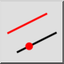
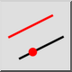
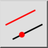
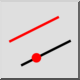

Décaler (par point)
Barre d'outils / Icône :
 

Menu : Modifier > Décaler (par point)
Raccourci : O, H
Commandes : offsetthrough | oh
Il s'agit d'une traduction automatique.
Barre d'outils / Icône :
 

Menu : Modifier > Décaler (par point)
Raccourci : O, H
Commandes : offsetthrough | oh
Avec cet outil, vous pouvez créer des parallèles aux lignes existantes ou des arcs et cercles concentriques. L'arc ou le cercle parallèle ou concentrique passe par un point donné.